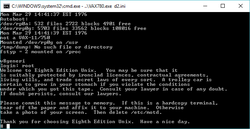

Saved from https://gunkies.org/wiki/Unix_Eighth_Edition on 2026-11-24 (MediaWiki render view).
| Unix V8 | |
 Logging onto v8 | |
| Type: | Multi-tasking, multi-user |
|---|---|
| Creator: | Bell Labs |
| Architecture: | VAX |
| Previous Version: | V7 |
| This Version: | V8 |
| Next Version: | V9 |
| Date Released: | 1985 |
A version of 8th Edition Unix was recently released by Alcatel-Lucent and is available here for download. It is not a complete distribution tape, just a tar file of a running system, made by Dan Cross.
Actually, "released" is too strong a word. They just signed a letter saying that they won't sue for the release of V8-V10 UNIX. The letter can be read here (PDF).
Unix v8 includes the stream interface (in /usr/include/sys/stream.h), as opposed to the socket interface, for doing network programming, included are PDP-11 cross-compilers and associated tools (assembler, linker, etc) as /usr/bin/{11cc,11as,...}, there is also a GUI, included with the TUHS files as a separate tape.
The GUI can be loaded with the blit emulator in 9front or compiled on Linux with plan9port. It's better to use an older version of SimH because accurate telnet timings make loading the blit gui take 17 minutes, along with a similar wait for most other applications.
Unix V8 has support for MIT's local-area networking Chaos protocol (presumably to communicate with LISP machines).
Here are some instructions. Some things must be done slightly different or in a different order though. For example you either need an old(er) version of SimH to run it, like 3.8, or use "set noasync" in your configs, otherwise you will get I/O errors.
Or you can use [1] which does the process automatically.
Boot messages of a v8 system running in SimH:
Boot : hp(0,0)unix 159316+54592+381508 start 0xf48 Unix 8th Edition Mon Mar 29 08:20:14 EST 1976 real mem = 8322048 nbuf = 254 nswbuf = 126 avail mem = 6316032 mcr0 at tr1 mcr1 at tr2 uba0 at tr3 dz0 at uba0 csr 160100 vec 0300 ipl x15 mba0 at tr8 hp0 at mba0 drive 0 hp1 at mba0 drive 1 mba1 at tr9 ht0 at mba1 drive 0 Mon Mar 29 08:20:56 EST 1976 Autoboot: /dev/rp0a: 531 files 2316 blocks 5307 free /dev/rrp0g: 8753 files 50554 blocks 91024 free Mon Mar 29 08:20:59 EST 1976 not a VAX-11/750 Mounted /dev/rp0g on /usr /tmp/dump: No such file or directory fstyp = 2 mounted on /proc v8generi login: root Welcome to Eighth Edition Unix. You may be sure that it is suitably protected by ironclad licences, contractual agreements, living wills, and trade secret laws of every sort. A trolley car is certain to grow in your stomach if you violate the conditions under which you got this tape. Consult your lawyer in case of any doubt. If doubt persists, consult our lawyers. Please commit this message to memory. If this is a hardcopy terminal, tear off the paper and affix it to your machine. Otherwise take a photo of your screen. Then delete /etc/motd. Thank you for choosing Eighth Edition Unix. Have a nice day. #
The following games are included in the v8 distribution mentioned above:
arithmetic atc back banner bcd bigp canfield cbrogue festoon fish fortune hack hangman hanoi mille ogre ppt quiz rogomatic rogue rogue52 rogue53 sail say scapegoat snake sread thanks tictactoe tso worm zork
| v • d • e UNIX Versions, Vendors and Related |
|---|
| Research Unix PDP-7 UNIX • V1 • V2 • V3 • V4 • V5 • V6 • V7 • V8 • V9 • V10 • LSX • MINI-UNIX • Unix/32V
AT&T and others - CB-UNIX • PWB/UNIX • USG UNIX • System III • System IV • System V • V7M • ULTRIX BSD - 1BSD • 2.9BSD • 2.10BSD • 2.11BSD • 3BSD • 4BSD • 4.1BSD • 4.2BSD • 4.3BSD • 4.4BSD BSD Descendants 386BSD • NetBSD • FreeBSD • OpenBSD • NeXTSTEP • Darwin |
| Other - xv6 • AMIX • SunOS • Solaris • A/UX • XENIX • AIX • Dell UNIX |